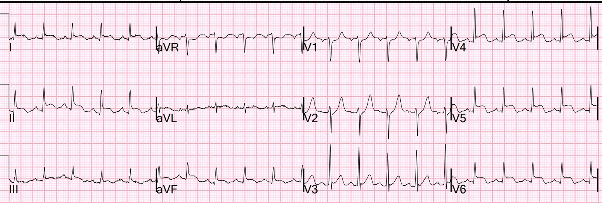
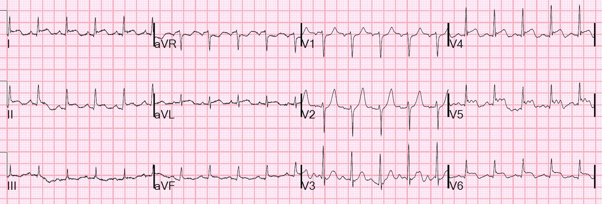
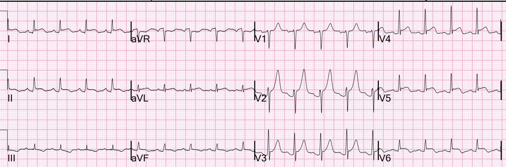
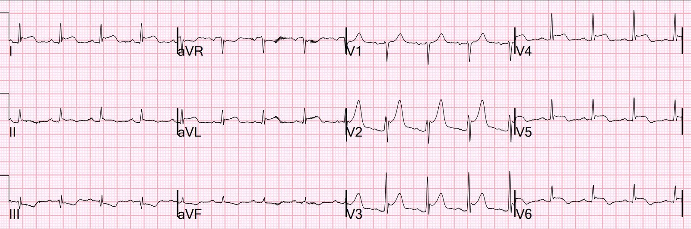
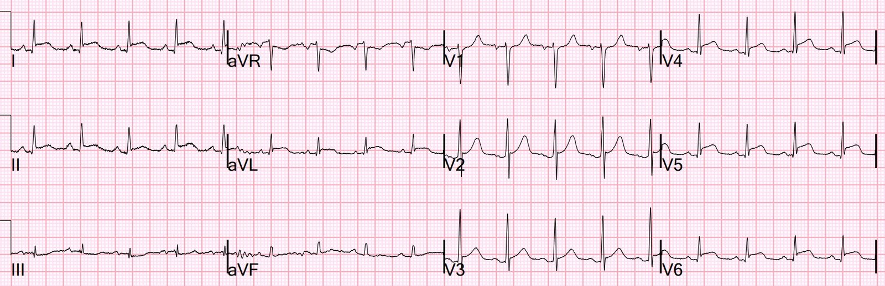
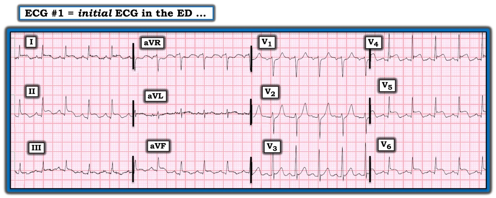

11/06/2022 — Đây là viêm cơ-màng ngoài tim? Hay OMI kèm viêm màng ngoài tim sau đó? Có phải chụp mạch vành luôn giải thích được các dấu hiệu điện tâm đồ?
Bản dịch tiếng Việt của bài "Is this Myo-pericarditis? Or OMI with subsequent pericarditis? Does the angiogram always explain the ECG findings?" – Dr. Smith’s ECG Blog. Giữ nguyên toàn bộ 7 hình ảnh của bản gốc.
Một bệnh nhân nam 57 tuổi có tiền sử đái tháo đường đến viện vì đau ngực sau xương ức kiểu đau nhói, lan ra hai vai, khởi phát khoảng 40 giờ trước khi đến viện. Bệnh nhân kể rằng cơn đau xuất hiện đột ngột, tăng lên khi nằm và giảm khi ngồi dậy. Cơn đau không liên quan đến gắng sức nhưng tăng lên khi hít sâu.
Bệnh nhân phủ nhận có bệnh lý nào trước đó, sốt, ớn lạnh, ho, sổ mũi. Bệnh nhân cho biết chưa từng có tiền sử bệnh tim. Bệnh nhân cho biết hiện không dùng thuốc nào để điều trị đái tháo đường. Bệnh nhân chưa từng bị huyết khối. Bệnh nhân không thấy phù chân.
Một điện tâm đồ được ghi tại khoa cấp cứu (ED):


Bạn nghĩ gì?
Có nhịp nhanh xoang, điều này nên khiến bạn ngần ngừ khi đang cân nhắc hội chứng vành cấp (ACS), vì phần lớn ACS có tần số tim bình thường, trừ khi nó gây giảm thể tích nhát bóp.
Có ST chênh lên ở các chuyển đạo dưới và bên, và ST chênh xuống ở V1 và V2. Có lẽ có đoạn PR chênh xuống quá mức ở chuyển đạo II. Không có dấu hiệu Spodick (đoạn TP dốc xuống), dấu hiệu mà gần đây được báo cáo là gặp ở khoảng 30% trường hợp viêm màng ngoài tim và 5% trường hợp OMI. Nhưng dấu hiệu Spodick đặc biệt không đáng tin cậy khi có nhịp nhanh, vì đoạn TP quá ngắn để thể hiện rõ độ dốc xuống.
Vì có sóng T dẹt, hình ảnh này trông giống viêm màng ngoài tim, nhưng với một ngoại lệ quan trọng: có ST chênh xuống ở V1 và V2. Viêm màng ngoài tim KHÔNG có ST chênh xuống ở bất kỳ đâu NGOẠI TRỪ aVR và có thể V1. Viêm cơ tim (myocarditis), vốn có thể khu trú (trong ca này là ở thành dưới, thành sau và thành bên), thì quả thật có thể có ST chênh xuống.
Ngoài ra, sóng T dẹt có thể đơn giản là khởi đầu của sóng T đảo ngược ở các chuyển đạo biểu hiện OMI.
Hãy nhớ: chẩn đoán viêm màng ngoài tim là tự chuốc lấy rủi ro.
Điện tâm đồ thứ 2 được ghi 30 phút sau đó:


Không thay đổi đáng kể
Kết quả troponin I (thế hệ 4) đầu tiên là 23,1 ng/mL (rất cao, phù hợp với viêm cơ tim hoặc OMI bán cấp).
Còn viêm cơ-màng ngoài tim (myo-pericarditis) thì sao? Triệu chứng của viêm cơ tim rất giống viêm màng ngoài tim, điện tâm đồ của viêm cơ tim trông giống hệt điện tâm đồ này, troponin có thể tăng rất cao, và cũng có thể có rối loạn vận động thành. Khác với viêm màng ngoài tim, viêm cơ tim có thể có ST chênh xuống, vì nó thường khu trú ở một vùng cơ tim, trong khi viêm màng ngoài tim là lan tỏa (ST chênh lên lan tỏa).
Ở đây khả năng cao là viêm cơ-màng ngoài tim. Cách duy nhất để tránh chụp mạch vành là có kết quả siêu âm tim KHÔNG có rối loạn vận động thành, nhưng điều đó khó xảy ra ngay cả trong viêm cơ-màng ngoài tim.
Vì vậy phòng thông tim (cath lab) đã được kích hoạt:
Chụp mạch vành:
Ghi chú của bác sĩ can thiệp: “Bệnh nhân nam 50 mấy tuổi, đau ngực 2 ngày, đau tăng khi nghỉ và khi hít sâu. Đau giảm khi cử động. Tại khoa cấp cứu ghi nhận ST chênh lên rõ ở các chuyển đạo dưới-bên kèm đoạn PR chênh xuống và đoạn PR chênh lên ở aVR. Siêu âm tim tại giường do bác sĩ cấp cứu thực hiện cho thấy rối loạn vận động thành ở thành trước bên và thành vách. Troponin I (loại thông thường hiện hành, không phải độ nhạy cao) là 23,1 ng/mL. Bệnh nhân được đưa cấp cứu vào phòng thông tim.”
Chụp mạch vành:
Thân chung động mạch vành trái: khẩu kính lớn và bình thường.
LAD: mạch khẩu kính lớn, vòng qua mỏm. Có bệnh lý lan tỏa mức độ nhẹ suốt chiều dài. Có các nhánh chéo khẩu kính nhỏ, không có hẹp đáng kể.
LCX: mạch khẩu kính lớn. OM1 và OM2 là các mạch khẩu kính nhỏ đến trung bình, không hẹp. OM3 (nhánh bờ tù thứ 3 của động mạch mũ) là mạch khẩu kính lớn và có một chỗ hẹp khu trú 70% ở đoạn gần. Mạch này chia đôi thành một nhánh trên lớn và một nhánh dưới nhỏ. Dòng chảy trong mạch là TIMI3.
RCA: mạch ưu thế, khẩu kính trung bình, không hẹp đáng kể. RCA cho một nhánh PDA nhỏ và một nhánh sau bên (PL), cả hai đều có bệnh lý không gây tắc nghẽn.
Đánh giá:
“Dựa trên bệnh sử đau ngực 2 ngày (tăng khi thở và khi nằm, giảm khi gắng sức) và điện tâm đồ, biểu hiện của bệnh nhân nhiều khả năng nhất phù hợp với viêm cơ-màng ngoài tim. Bệnh nhân có hẹp OM3, là mạch khẩu kính lớn, nhưng có dòng chảy TIMI-3 và không có bằng chứng rõ ràng về nứt vỡ mảng xơ vữa. Do đó đã quyết định không can thiệp tổn thương này.”
Điện tâm đồ này được ghi sau lần chụp mạch vành đầu tiên:


Bây giờ sóng T ở V2 và V3 lớn hơn nhiều. ST chênh xuống đã mất.
Đây trông giống sóng T tái tưới máu thành sau.
Phải chăng tổn thương ở OM3 là một tổn thương OMI? Phải chăng nó đã tự mở thông, dẫn đến hồi phục ST chênh xuống ở V2, V3 và xuất hiện sóng T tái tưới máu thành sau?
Troponin đạt đỉnh 26,6 ng/mL
Một bước ngoặt
Sau đó, nhóm can thiệp xem lại phim chụp mạch vành và nhận ra rằng tổn thương ở OM3 quả thật là mảng xơ vữa nứt vỡ, rằng nó “mờ” (gợi ý có huyết khối) và dòng chảy dưới mức TIMI-3. Vậy đây quả thật là một OMI của nhánh bờ tù thứ 3 lớn tách ra từ động mạch mũ.
Bệnh nhân được đưa trở lại để chụp mạch vành lần hai và đặt stent.
Một điện tâm đồ khác được ghi sau lần chụp mạch vành thứ 2:


Không khác biệt nhiều.
Siêu âm tim đã được thực hiện:
Không có tràn dịch
Phân suất tống máu (EF) = 47%
Rối loạn vận động thành khu trú - thành bên.
Rối loạn vận động thành khu trú - thành dưới-bên (tức là thành sau theo danh pháp mới)
Điện tâm đồ này được ghi 2 ngày sau đó:


Hình ảnh này vẫn trông giống viêm màng ngoài tim.
Bàn luận:
Chuyện gì đã xảy ra? Bệnh nhân bị OMI cấp của nhánh bờ tù thứ 3 thuộc động mạch mũ. Bệnh nhân đến viện mãi 40 giờ sau khởi phát (vì vậy troponin đầu tiên tăng rất cao). Bệnh nhân có vùng nhồi máu xuyên thành đủ rộng để gây viêm màng ngoài tim sau nhồi máu, dẫn đến đau thay đổi theo tư thế và đau kiểu màng phổi, cùng ST chênh lên kéo dài mà không có sóng T lớn.
Trong ca này, các dấu hiệu điện tâm đồ, troponin và siêu âm tim không thể phân biệt được với tổn thương ban đầu của viêm cơ-màng ngoài tim (vốn thường khu trú, và vì thế giống OMI)
Như vậy bệnh nhân bị OMI, sau đó là viêm màng ngoài tim sau nhồi máu, giả dạng viêm cơ-màng ngoài tim.
Có khác biệt nào giữa viêm màng ngoài tim sau nhồi máu và hội chứng Dressler không? Có.
Viêm màng ngoài tim sau nhồi máu (đôi khi được gọi là viêm màng ngoài tim khu trú sau nhồi máu – postinfarction regional pericarditis) xảy ra rất sớm (vài ngày) sau khởi phát nhồi máu cơ tim. Xem bài viết được dẫn link để biết chi tiết.
Hội chứng Dressler (hay “hội chứng sau tổn thương cơ tim”) có các dấu hiệu và triệu chứng tương tự như ở bệnh nhân viêm màng ngoài tim cấp và/hoặc tràn dịch màng ngoài tim trong các bối cảnh lâm sàng khác, nhưng có thời gian tiềm tàng từ vài tuần đến vài tháng sau nhồi máu cơ tim, hiếm khi biểu hiện sớm trong vòng một tuần sau nhồi máu cơ tim. Trong hội chứng Dressler, tổn thương cơ tim ban đầu được cho là giải phóng các kháng nguyên tim và kích thích một đáp ứng tổn thương qua trung gian miễn dịch, có thể tương tự như trong viêm màng ngoài tim vô căn.
Điều này càng minh họa thêm câu nói cũ của tôi: “Chẩn đoán viêm màng ngoài tim là tự chuốc lấy rủi ro.” Điều đó đúng ngay cả khi rõ ràng là viêm màng ngoài tim, vì viêm màng ngoài tim có thể là hậu quả của nhồi máu cơ tim cấp!!

===================================
BÌNH LUẬN của KEN GRAUER, MD (11/6/2022):
===================================
Chủ đề viêm màng ngoài tim cấp do chấn thương vừa được bàn luận trong bài ngày 8 tháng Sáu năm 2022 của BS. Nicholson và BS. Meyers. Trong Bình luận của tôi ở bài đó (ở cuối trang) — tôi đã đối chiếu các dấu hiệu điện tâm đồ của viêm màng ngoài tim cấp điển hình với các dấu hiệu của bệnh nhân trong ca đó, người đã sống sót sau nhiều chấn thương, trong đó có một vết thương xuyên thấu vào tim.
Ca hôm nay của BS. Smith minh họa một khía cạnh khác liên quan đến chẩn đoán viêm màng ngoài tim cấp trên điện tâm đồ. Xin nhấn mạnh — có nhiều nguyên nhân tiềm năng gây viêm màng ngoài tim cấp. Bao gồm:
- Viêm màng ngoài tim cấp do virus (có lẽ là nguyên nhân thường gặp nhất trong dân số chung).
- Các bệnh lý nhiễm trùng khác (tức là nhiễm vi khuẩn, nấm, lao).
- Các rối loạn viêm (tức là viêm khớp dạng thấp, lupus ban đỏ hệ thống, thấp tim, các dạng viêm mạch khác).
- Các rối loạn chuyển hóa (tức là urê máu cao do suy thận, suy giáp).
- Các tình trạng khác (tức là ung thư, một số thuốc, xạ trị, sarcoidosis, chấn thương).
- Vô căn (tức là không rõ nguyên nhân — mặc dù nhiều trường hợp trong số này có lẽ là nhiễm virus không được chẩn đoán).
- Nguyên nhân tại tim (tức là viêm màng ngoài tim khu trú sau nhồi máu, hội chứng Dressler [tức là một đáp ứng qua trung gian tự miễn với các kháng nguyên cơ tim, thường gặp 2-3 tuần sau nhồi máu cơ tim], sau phẫu thuật tim).
Cũng cần nhấn mạnh rằng: i) Dù được bàn luận nhiều đến đâu — viêm màng ngoài tim không phải là chẩn đoán thường gặp trong bối cảnh cấp cứu; ii) Khi viêm màng ngoài tim xảy ra — biểu hiện của nó có thể khác nhau tùy theo yếu tố nào ở trên là nguyên nhân; và, iii) Các nguyên nhân tại tim vốn ít gặp là hội chứng Dressler và viêm màng ngoài tim khu trú sau nhồi máu thậm chí đã trở nên ít gặp hơn nữa trong những năm gần đây, được cho là kết quả tích cực của việc gia tăng điều trị tái tưới máu.
Ca hôm nay thú vị ở chỗ bệnh nhân được cho là đã bị cả OMI cấp lẫn viêm màng ngoài tim khu trú sau nhồi máu. Người đàn ông 57 tuổi này đến khoa cấp cứu (ED) với bệnh sử đau ngực 2 ngày, bao gồm cả yếu tố kiểu màng phổi (đau ngực tăng khi hít sâu) — và thay đổi theo tư thế (đau ngực tăng khi nằm ngửa, và giảm khi ngồi dậy).
- Dấu hiệu âm tính có ý nghĩa nào đã bị thiếu trong bệnh sử được cung cấp?
- Để rõ ràng — tôi đã đưa lại điện tâm đồ ban đầu tại khoa cấp cứu của ca hôm nay trong Hình 1. Những dấu hiệu điện tâm đồ nào trên bản ghi ban đầu hôm nay phù hợp với viêm màng ngoài tim cấp?
- Những dấu hiệu điện tâm đồ nào chống lại viêm màng ngoài tim cấp?


TRẢ LỜI:
- Dấu hiệu âm tính có ý nghĩa bị thiếu trong bệnh sử của ca hôm nay là “Không nghe thấy tiếng cọ màng ngoài tim”. Theo kinh nghiệm của tôi khi xem xét đúng nghĩa hàng trăm ca bệnh trên internet nghi ngờ chẩn đoán viêm màng ngoài tim cấp — tuyệt đại đa số bác sĩ lâm sàng KHÔNG HỀ đề cập rằng họ đã nghe tìm tiếng cọ màng ngoài tim. Nếu Không Được đề cập như một dấu hiệu dương tính hay âm tính — điều này thường có nghĩa là bác sĩ lâm sàng đã không nghe tìm tiếng cọ. Không nghe tìm tiếng cọ là một thiếu sót nghiêm trọng — vì NẾU bạn nghe thấy tiếng cọ màng ngoài tim — thì bạn đã xác lập được chẩn đoán viêm màng ngoài tim cấp!
- Các dấu hiệu điện tâm đồ trong Hình 1 phù hợp với viêm màng ngoài tim cấp bao gồm: i) ST chênh lên dốc lên ở nhiều chuyển đạo; ii) Hình dạng ST-T chênh lên ở chuyển đạo II giống chuyển đạo I hơn là chuyển đạo III (trong khi với nhồi máu cơ tim cấp thành dưới — hình dạng ST-T ở chuyển đạo II giống chuyển đạo III hơn); và, iii) Tỷ lệ ST/sóng T ở chuyển đạo V6 >0,25 (trong khi tỷ lệ này có xu hướng nhỏ hơn với các biến thể tái cực) — Xem Bình luận của tôi trong bài ngày 8 tháng Sáu năm 2022 để ôn lại các dấu hiệu này và các dấu hiệu điện tâm đồ điển hình khác của viêm màng ngoài tim cấp.
- Không giúp ích cho chẩn đoán trong Hình 1 là các dấu hiệu: i) Đoạn PR chênh xuống — mà tôi thấy khó đánh giá ở các chuyển đạo dưới của bản ghi này (do trôi đường nền). Tôi không thấy đoạn PR chênh xuống lan tỏa — và ngay cả khi có, dấu hiệu này cũng thiếu độ đặc hiệu đối với viêm màng ngoài tim cấp; và, ii) Nhiều chuyển đạo trên bản ghi này có sóng Q — tuy nhiên, các sóng q ở chuyển đạo I,II,III,aVF và V4-6 nhỏ và hẹp (và nhiều khả năng không có ý nghĩa).
- Các dấu hiệu điện tâm đồ trong Hình 1 chống lại chẩn đoán viêm màng ngoài tim cấp bao gồm: i) Có điểm J chênh xuống ở chuyển đạo V2 (Ngoài các chuyển đạo phía phải là III, aVR và V1 — không nên có ST chênh xuống ở các chuyển đạo khác trong viêm màng ngoài tim cấp); ii) Sóng T ở chuyển đạo V2 cao và nhọn một cách bất ngờ (Bình thường hình dạng sẽ tương tự các ST-T chênh lên lan tỏa); và, iii) Có vẻ như đã có gợi ý sóng T bắt đầu đảo ngược ở một số chuyển đạo có ST chênh lên (trong khi sóng T đảo ngược trong viêm màng ngoài tim cấp thường không bắt đầu cho đến khi ST chênh lên đã hồi phục).
Kết luận: Mặc dù ở lần nhìn thứ 1, hình ảnh điện tâm đồ trong Hình 1 có vẻ gợi ý viêm màng ngoài tim cấp — nhưng khi xem xét kỹ hơn, có những đặc điểm điện tâm đồ đáng kể chống lại chẩn đoán viêm màng ngoài tim cấp không biến chứng.
- Theo phần bàn luận tuyệt vời ở trên của BS. Smith — diễn tiến của ca này (bao gồm hình ảnh điện tâm đồ trên các bản ghi liên tiếp) — phù hợp với điều có lẽ đã xảy ra trong ca hôm nay, cụ thể là sự kết hợp của OMI cấp do tắc LCx, sau đó là sự xuất hiện của viêm màng ngoài tim khu trú sau nhồi máu.